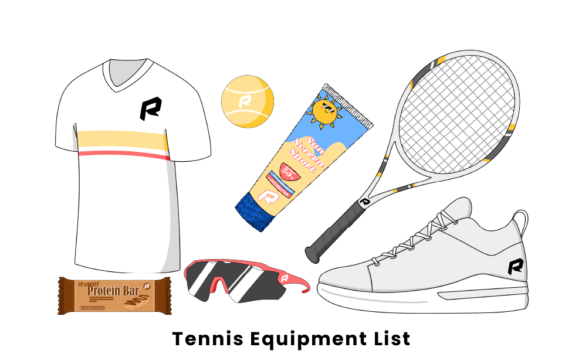

Tennis is a sport that originated in England around the 19th century and is now played in a host
of countries
around the world. There are four major tournaments known as the ‘majors’ that include Wimbledon, US Open,
French Open and Australian tournament.
Object of the Game
The game of tennis played on a rectangular court with a net running across the centre. The aim is to hit the
ball over the net landing the ball within the margins of the court and in a way that results in your
opponent being unable to return the ball. You win a point every time your opponent is unable to return the
ball within the court.
Players & Equipment
A tennis match can be played by either one player on each side – a singles match – or two players on each
side – a doubles match. The rectangular shaped court has a base line (at the back), service areas (two
spaces just over the net in which a successful serve must land in) and two tram lines down either side.
A
singles match will mean you use the inner side tram line and a doubles match will mean you use the outer
tram line.
A court can be played on four main surfaces including grass, clay, hard surface and carpet. Each
tournament
will
choose one surface type and stick without throughout. All that is required in terms of equipment is a
stringed
racket each and a tennis ball.
Scoring
You need to score four points to win a game of tennis. The points are known as 15 (1 point), 30 (two
points), 40 (three points) and the fourth would result in the winning point and the end of that game. If the
scores went to 40-40 this would be known as deuce. When a game reaches deuce the player must then win by two
clear points.
Winning the Game
To win the game you must win a certain amount of sets (best of three for women’s matches and best of 5 sets for
men’s matches). Winning a set is simply the first player to reach 6 games but have to be clear by at least 2
games. If your opponent wins 5 games you must win the set 7-5. If the set goes to 6-6 then a tie break is played
and it’s simply the first player to 7 points.
Rules of Tennis
- The game starts with a coin toss to determine which player must serve first and which side they want to
serve
from.
- The server must then serve each point from alternative sides on the base line. At no point must the
server’s
feet move in front of the baseline on the court prior to hitting their serve.
- If the server fails to get their first serve in they may take advantage of a second serve. If they again
fail to
get their second serve in then a double fault will be called and the point lost.
- If the server clips the net but the ball goes in the service area still then let is called and they get
to take
that serve again without penalty. If the ball hits the net and fails to go in the service area then out
is
called and they lose that serve.
- The receiver may stand where they wish upon receipt of the serve. If the ball is struck without the
serve
bouncing then the server will receive the point.
- Once a serve has been made the amount of shots between the players can be unlimited. The point is won by
hitting
the ball so the opponent fails to return it in the scoring areas.
- Points are awarded in scores of 15, 30 and 40. 15 represent 1 point, 30 = 2 and 40 = 3.
- You need 4 points to win a game. If a game lands on 40-40 it’s known as deuce. From deuce a player needs
to win 2
consecutive points to win the game. After winning one point from deuce they player is on advantage. If
the
player wins the next point they win the game, if they lose it goes back to deuce.
- To win the set a player must win 6 games by 2 or more. The opening sets will go to a tie break if its
ends up
6-6 where players play first to 7 points. The final set will not have a tie break and requires players
to win by
two games with no limits.
- If a player touches the net, distracts his opponent or impedes in anyway then they automatically lose
the point.
- The ball can hit any part of the line for the point to be called in, outside the line and the ball is
out.
- Balls in a tennis match are changed for new balls every 6 games.
- A player loses a point if they fail to return the ball in either the correct areas on the court, hits
the net
and doesn't go into opponent’s area or fails to return the ball before it bounces twice in their half.
